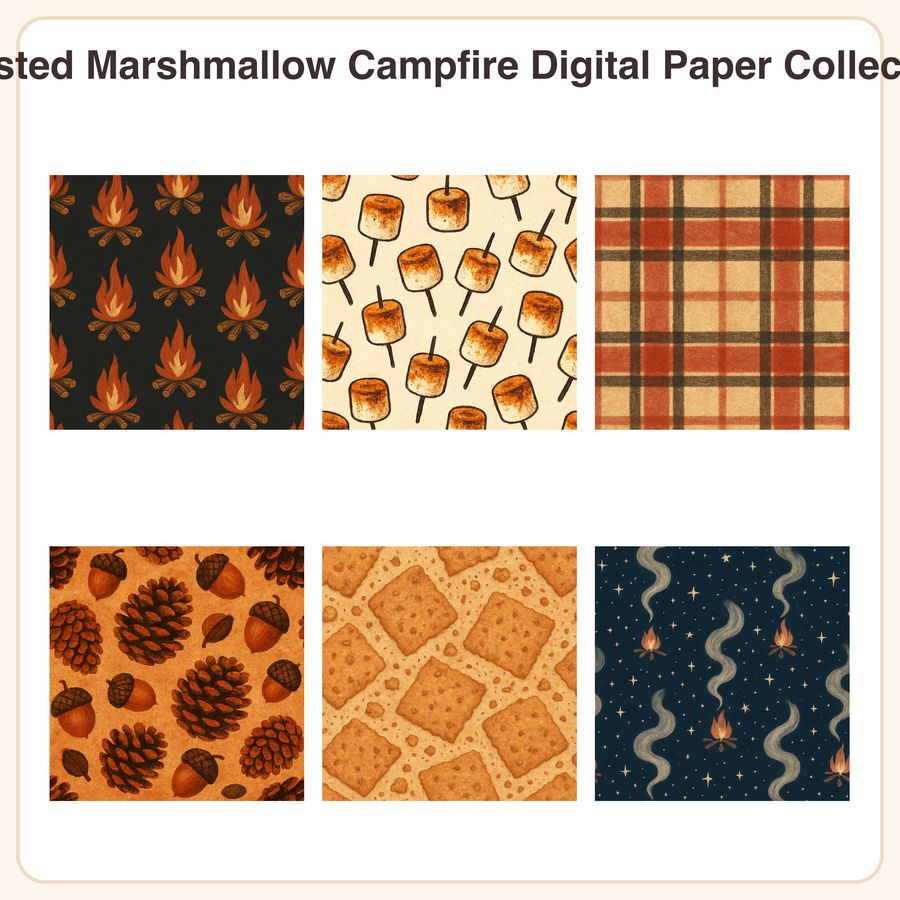

$4.99
View on Etsy🔥 Cozy up your next project with the Toasted Marshmallow Campfire Digital Paper Collection — six nostalgic autumn-night patterns made for scrapbooking, planners, party goods, and journals. What's included: • 6 seamless digital papers, each in 3072px x 3072px JPEG (12x12in @ 300dpi) • 6 matching repeatable PNG tiles for custom resizing • Patterns: campfire flame motif in rust & gold on charcoal, toasted marshmallow polka dots on cream, red & cream flannel plaid texture, scattered pinecones & acorns, graham cracker crumb texture, star-filled night sky with campfire smoke wisps Style: soft textured illustration with a warm firelight palette (rust, cream, charcoal, toasted brown) and a cozy hand-drawn folk feel. How to use: Perfect for scrapbook backgrounds, planner covers, printable party goods, journal pages, gift wrap, stickers, fabric mockups, and more. Files are high-resolution and tile seamlessly for larger projects. File formats: JPEG + PNG, delivered as an instant digital download (zip file). No physical item will be shipped. License: For personal and small-business commercial use (up to 500 finished units sold). Please do not resell, share, or redistribute the digital files themselves. Honest note: These designs were created in our shop with the help of AI tools, then refined and prepared by us for a cohesive, print-ready collection. Thanks for stopping by — happy crafting! 🍁